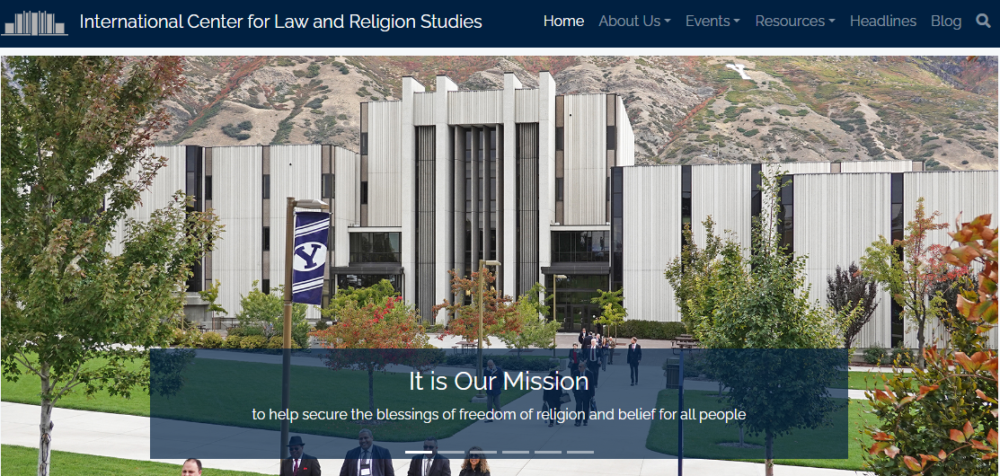

Showcase Projects
Dignity for Everyone
Summary
In this project was tasked with rebuilding an existing website from scratch. To ensure success, I collaborated closely with stakeholders to establish clear requirements and objectives. In my capacity as project lead, I was responsible for overseeing all aspects of development work from start to finish.
Project Challenges
In this project there was a somewhat difficult task to create a form to allow for individuals to become signatories, as well as a corresponding page to display the names of those who had completed the form. This task was made more complex by a requirement that all names displayed on the page had to be approved by a non-technical group prior to publication. To achieve this, I leveraged my expertise with Gravity Forms API to streamline the approval process down to a single click.
Technologies Used
PHP, HTML, CSS, JavaScript, WordPress, Composer, GitHub, NGINX, CloudFlare, Gravity Forms
Explore the Live Site
Dignity for EveryoneICLRS
Summary
As part of my primary responsibilities, I have been tasked with maintaining the iclrs.org site, which involves content updates and the creation of custom pages for various events. Notable work I have undertaken includes the creation of custom pages, which involved writing custom HTML, CSS and JavaScript to achieve different appearances and layouts, depending on the specific requirements of the page.
My work has also encompassed the development of some basic CSS in-page, to ensure that YouTube videos are displayed correctly and are responsive to different screen sizes. In addition, I have created user-friendly layouts for various events, which provide attendees with easy-to-use schedules to reference. As part of my role, I have also undertaken significant image editing work to ensure that all content displays correctly, even when images are provided in the wrong format or size.
Technologies Used
PHP, HTML, CSS, JavaScript, WordPress, Composer, GitHub, NGINX, CloudFlare, Gravity Forms
Explore the Live Site
iclrs.orgREST API and Unit Tests
This IT210 Web development class project was divided into two parts, each aimed at demonstrating proficiency in different aspects of software development.
The first part involved the creation of software using Python to test an existing REST API. This unit testing approach ensured that the responses received from the API aligned with our expectations. Through this, I showcased my understanding and implementation of unit testing techniques.
For the second part of the project, I was tasked with recreating the REST API using Node.js. This involved the use of technologies such as Shell, Mongo DB, and REST to develop a functional API. This allowed me to utilize the previously created Python tester to verify that my Node.js API was functioning as expected.
Technologies Used
Node.js, Shell, Python, Mongo DB, REST
Explore the code for these projects on GitHub
Part one API testerPart two Node.js API